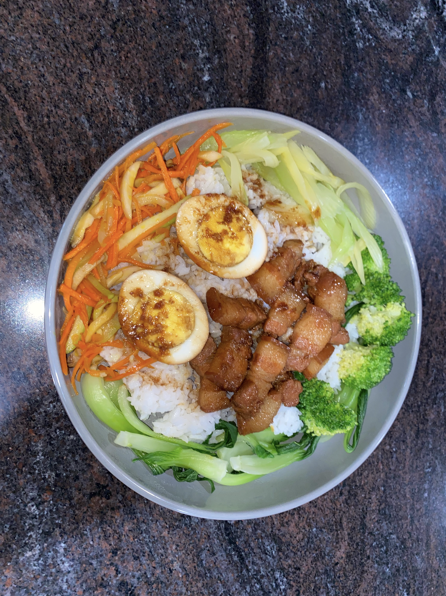
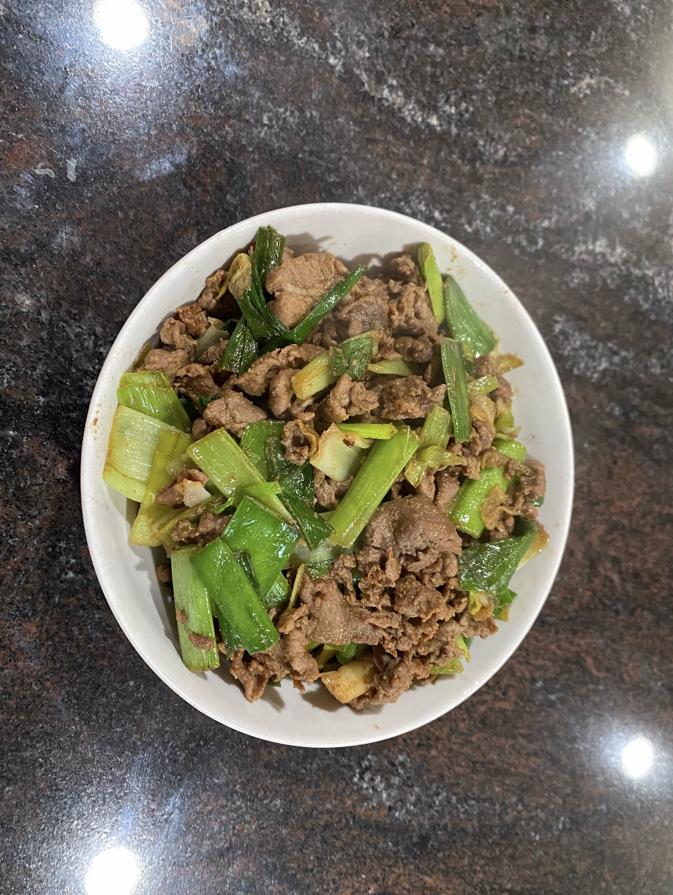

As a second generation immigrant (i.e. my parents immigrated to the United States from China), I've started thinking a lot about how to pass on the culture I cherish and treasure so much to a new generation that may not care much for it. What motivation would my children have to learn Chinese, if they have no one to speak Chinese to? What reason would they have to know all the Chinese holidays and how to celebrate them, if there's no one to celebrate with? Those are all difficult questions to answer.
But, what reason would they have to know Chinese recipes? Becuase they taste good, of course! Good food is universal and withstands the trials of time. Thus, I wanted to document some of my family's favorite recipes, with all its familial quirks. Even if it's a common dish, every family has a unique way of making it. For example, my mom makes tomato and egg with stomato paste instead of sliced tomatoes as the recipe normally calls for. That's because fresh tomatoes were hard to come by in the winters when she was a child, so her family would ration tomatoes by turning them into a paste that could be stored through the winter in mason jars. As a result, that's what she's accustomed to and that's how my family has always eaten the dish of tomato and egg.
Below, I've included some of my family's most beloved recipes with all their quirks. (Recipes to come, I asked my mom for them!)
 